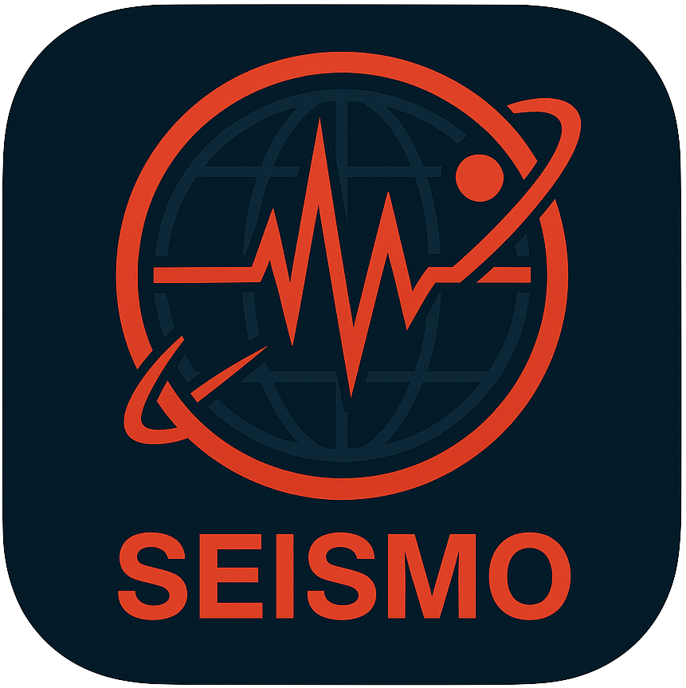

SEISMO
INITIALIZING TELEMETRY...
M 0.0
0 km
Location Name
00:00:00 UTC
SEISMO
Global Telemetry Array
SYS. STATUS
ONLINE
DATA FEED
LAST 24 HOURS
LAST 7 DAYS
LAST HOUR
GLOBAL METRICS
EVENTS
0
MAX MAG
0.0
VOLATILITY
0.0
/100
TOTAL EST. ENERGY RELEASED
0.00 TJ
ENERGY DISTRIBUTION
OLD
NOW
TARGET TELEMETRY
AWAITING TARGET LOCK...
Click any node on the globe to acquire data.
MAGNITUDE
0.0
DEPTH
0 km
LOCATION
--
KINETIC YIELD ESTIMATE
0.00 Joules
+
-
↺
INTENSITY BY REGION
CALCULATING...
RECENT DETECTIONS
Tectonic
Heatmap
Orbit
DEPTH:
0km
700km+
TIMELINE REPLAY (UTC)
LIVE
-24H
CURRENT